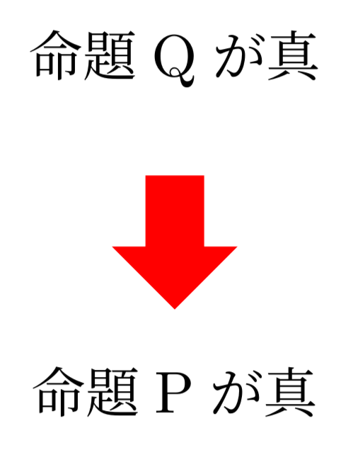

毎回マニュアルから情報を探すのが面倒なので、基本的なものをここにまとめたい。個人的に気になったことに対しては深堀して補足しているが、細かいことを気にしすぎた結果、TikZやPGFのソースコードを読みに行く羽目になった。
またここに書いてある内容がベストプラクティスとは限らないことに注意。もっと簡単な書き方があるかもしれない。
情報の集め方
ここに載っているものはほぼTikZ/PGFのマニュアル(CTANの “PDF Manual"のこと) に載っている。TeX Liveを導入しているなら、コマンドtexdoc tikzで開くはず。この記事では、なるべく参照した情報を記載するようにする。ここに書いてあることが間違っている場合があるので、何かおかしいなと思ったらマニュアルを参照すること。
- 知らないキーワードや記号が出てきたらマニュアル末尾のindexで探すと良い。
- TikZで出来ることを把握したいなら、Part Iのチュートリアルを読んでみるのが有効。もしくはPartIII, Vあたりを流し読みする。PGF Manualはページ数が膨大なため、全部読もうとするのは恐らく得策では無い。目次を眺めながら興味のあるところをつまむのが良いと思う(読み方について、Introductionの1.4 How to Read This Manualも参照)。
- 既にやりたいことがあるが、TikZで実現する方法が分からない場合は、ググる。英語のキーワードで検索すれば、大抵Stack Exchangeがヒットする。画像検索も有効。
準備
パッケージ読み込み・この記事での記法の注意
TikZはtikzパッケージから読み込める。
以降、コードを記載するときはこの記述を省略する。
また、TikZには色々な便利なライブラリが用意されている。例えば座標計算に便利なライブラリであるCalcは次のように読み込む。
以降、コード中で必要なライブラリがあった場合は、コードの先頭に\usetikzlibraryを記載することにする。
このコマンドは実際にはプリアンブルに書く必要があることに注意。
DVIドライバの指定
必ずクラスオプションにDVIドライバを指定すること。さもなければ、色が出力されなかったり、図形の位置が正確に計算されなかったりする。
以下は、DVIドライバをdvipdfmx、クラスをjsarticleで行う例。
\documentclass[dvipdfmx]{jsarticle}
クラスオプションにDVIドライバを指定する必要性については、以下のサイトを参照：
日本語 LaTeX の新常識 2021 - Qiita。
個人的な図の描き方
自分は主にBeamerでスライドを作ったり、論文やレポートなどのLaTeX文書を書いたりするときにTikZを用いる。その場合、以下のワークフローが現状良いと思っている。
- 書き捨て用のLaTeX文書を作成し、そこにTikZのコードを書く。
- 満足した出来になったら、スライドや論文、レポートのLaTeX文書に貼り付ける。
1でわざわざ別ファイルで書く理由は、タイプセット時間削減のためである。
本命のLaTeX文書に直接書き込む方式だと、今書いている図形以外のところまでタイプセットの処理が入るため、どうしてもタイプセットの時間が遅くなる（もしかしたら部分的にタイプセットしたり、それ以外の部分をキャッシュで残したりする仕組みがあるのかもしれないが、未調査）。
ちなみにLaTeX文書に埋め込む以外の用途で用いるなら、
- 生成されたPDF文書を適当に拡大してスクショする：ラスタ形式の画像しか取得できないが、手軽。
standaloneクラスでタイプセットし、それを適当な方法で変換する：例えばdvisvgmを使えばSVGファイルを作れる。
などが考えられる。
色を定義 (TikZの話ではない)
TikZではなくxcolorの話だが、大事なのでここで記す。これはtikzパッケージを読み込んだときに自動で読み込まれるようだが、もしxcolor単体で使いたいなら、xcolorパッケージを読み込むこと。
色同士を!で混ぜることができる。例えばred!20!blue!30!whiteと書くと、赤、青、白がそれぞれ20%、30%、(100-20-30)%混ざった色になる。
カラーコードやRGB値などから定義したい場合は\definecolor、既存の色を混ぜて使いたい場合は\colorletを利用。
\definecolor{mycolor1}{HTML}{888888} # 定義する色名 カラーモデル 色の値
\colorlet{mycolor2}{orange!75!white} # 定義する色名 色
色名に-をつけると補色を表現できる。ただし、ここでの補色はRGBでの補色。例えば-redとすると赤色の補色のシアンとなる。RYBでの補色を使いたい場合は-には頼らず、色を直接\definecolorで指定する必要があると思われる。
文字にマーカーをつける
参考: TikZ で“インラインな”図を描く - Qiita
\tikzはtikzpicture環境がコマンドになっただけで、使い方は同じ。\tikzコマンドのオプション引数baselineで位置を補正。inner sepやouter sepで余白調整。- 高さを固定したい場合は
minimum heightで調整。
- 枠の下に文字を配置したい場合は、
remember pictureとoverlayを利用。
overlayを使わず直接\tikzの中に書いても良いが、文字が多すぎると左右に余計な余白が空く。
\usetikzlibrary{positioning}
\begin{align*}
f(x) =
\tikz[remember picture, baseline=(T1.base)] {
\node [fill=orange!20!white, inner sep=0pt, outer sep=0, minimum height=4ex] (T1) {$q(x)$};
}
p(x) +
\tikz[remember picture, baseline=(T2.base)] {
\node [fill=red!20!white, inner sep=0pt, outer sep=0, minimum height=4ex] (T2) {$r(x)$};
}
\end{align*}
\begin{tikzpicture}[remember picture, overlay]
\node [below=0pt of T1, text=orange!80!black] {商};
\node [below=0pt of T2, text=red!80!black] {余り};
\end{tikzpicture}
(補足) スタイルを使い回す
スタイルを使いまわしたい場合は、以下の3つの状況において名前/.style={スタイル}のように指定する。
\tikzのオプション引数に指定tikzpicture環境のオプション引数に指定\tikzsetを利用
今回は異なる\tikzの間でスタイルを使いまわしたいのでtikzsetが適当。以下のように使う。
\tikzset{box/.style={inner sep=0pt, outer sep=0, minimum height=4ex}}
\begin{align*}
f(x) =
\tikz[remember picture, baseline=(T1.base)] {
\node [fill=orange!20!white, box] (T1) {$q(x)$};
}
p(x) +
\tikz[remember picture, baseline=(T2.base)] {
\node [fill=red!20!white, box] (T2) {$r(x)$};
}
\end{align*}
なお、styleには引数が指定できる。#1で引数を参照する。スタイルを適用したい要素のオプション引数にて、名前=引数のように使う。2個以上の引数を指定したい場合はstyle n argsを使えばいいらしい。(styleの参考: PGF Manual, Part VII, 87.4.4 Defining Styles)
\tikzset{box/.style={inner sep=1pt, outer sep=0, minimum height=#1}}
\begin{align*}
f(x) =
\tikz[remember picture, baseline=(T1.base)] {
\node [fill=orange!20!white, box=4ex] (T1) {$q(x)$};
}
p(x) +
\tikz[remember picture, baseline=(T2.base)] {
\node [fill=red!20!white, box=4ex] (T2) {$r(x)$};
}
\end{align*}
Shape
参考: PGF Manual, Part V, 71 Shape Library
Shapeライブラリでは色々な図形が定義されている。種類は色々あるのでPDFマニュアル参照。
矢印
(補足 Shapeライブラリを使わない方法も後で紹介している。）
shapes.arrowsでsingle arrowとして定義されている。
single arrowで矢印を描画。arrow head extendで矢印の先端の幅を設定。minimum heightで長さ調整。shape border rotate=-90で向きを設定。それに伴いshape border incircleを設定しておく(後述)。
\usetikzlibrary{shapes.arrows}
\begin{tikzpicture}
\node at (0, 0) {命題Pが真};
\node [fill=red, single arrow, single arrow head extend=2mm,
minimum height=8mm, shape border uses incircle,
shape border rotate=-90] at (0, 1cm) {};
\node at (0, 2cm) {命題Qが真};
\end{tikzpicture}
shape border uses incircleは、shapeの境界線が内接円を使って構成されているかどうかを決定するキー、
とマニュアルには書いてあったが、いまいちよくわからなかった…。
shape border rotateの説明曰く、
shape border uses incircleを設定しない状態でshape border rotate=aを設定すると、aの部分が
「90度の整数倍に最も近い数」に丸められて解釈されるらしい。
(参考: PGF Manual, Part II, 17.2.3 Common Options)

(込み入った補足): shape border rotateの挙動
「90度の整数倍に最も近い数」に丸められるのであれば、-90のときshape border uses incircleを設定しなくても良いのではないか、と思うが、実際にやってみると-90は0と解釈される。
-90ではなく270を指定すると、ちゃんと-90度回転される。この理由を知るために、該当ソースコードを探して読んだ。
この計算は、おそらくこのソースコードで行っている。
- 角度aに45度加える。
- 1を90で割る。
- 2に90を掛ける。
要するに、(a + 45) / 90 * 90を計算している。ただし、/は整数の除算を表す。
この答えは負数の切り捨て方に依存する。Pythonでは-1 // 2 == -1となる。Pythonでは負の方向に丸められるようだ。
ではTeXではどうなのかというと、割り算の結果は単純に切り捨てになる模様。
\newcount\x
\x=-1
\divide\x2
計算結果: \the\x
よって、(-90 + 45) / 90 * 90は0と計算される。
矢印の形を変える
参考: PGF Manual, Part III, 16.4.4 Defining Shorthands
終端を変えたいなら>を設定する。他にも色々あるのでマニュアル参照。
\usetikzlibrary{arrows.meta}
\begin{tikzpicture}
\draw [->] (0,0) -- (1,0);
\draw [->, >=Stealth] (0,-0.5) -- (1,-0.5);
\draw [->, >={Stealth[round]}] (0,-1.0) -- (1,-1.0);
\draw [->, >=Latex] (0,-1.5) -- (1,-1.5);
\draw [->, >={Latex[round]}] (0,-2.0) -- (1,-2.0);
\end{tikzpicture}
巨大な矢印
Shapeライブラリのsingle arrowsを使ってもよいが、以下のようにTriangleの矢印を使うことで同じ図形を再現できる。パラメータは以下の通り。
\drawのline width：線の太さ。\drawのTriangle：
width：矢印の幅。length：矢印の長さ。
outer sepは始点と終点の空白を制御する。詳しくは後述。
\usetikzlibrary{arrows.meta}
\begin{tikzpicture}
\node [outer sep=2pt] (p) at (0, 0) {命題Pが真};
\node [outer sep=2pt] (q) at (0, 2cm) {命題Qが真};
\draw [->,
>={Triangle[width=10mm, length=5mm]},
line width=6mm,
red] (q) -- (p);
\end{tikzpicture}
Shapeライブラリの場合は矢印を回転させて使う必要があるが、こちらは向きは自動で変わる。そのため多くの場合はこちらのほうが使いやすいかもしれない。
点の上にラベルをつける
参考: PGF Manual, Part III, 17.10 The Label and Pin Options
coordinateやnodeにlabelキーを指定すると、例えば図形の点の上にラベルをつけることができる。
例えば以下のようなコードがあったとする。
\usetikzlibrary{positioning}
\begin{tikzpicture}
\coordinate (a) at (0,0);
\fill (a) circle [radius=2pt];
\node [left=0pt of a] {$A$};
\end{tikzpicture}
これが少しだけ簡単になる。
left:を指定しなかった場合はデフォルトでabove:が付く。
\begin{tikzpicture}
\coordinate [label=left:$A$] (a) at (0,0);
\fill (a) circle [radius=2pt];
\end{tikzpicture}
線分を曲げる
参考: PGF Manual, Part V, 74 To Path Library
自由に曲線を描きたいなら、\pathのcontrolsを使えば良い(参考: PGF Manual, PartIII, 14.3 The Curve-To Operation)。しかしベジェ曲線に慣れていないと、思い通りの曲線を描くのは大変。しかし、シンプルなケースであればTo Path Libraryを使えば簡単に描ける。
例えば「線分をある方向に曲げたい場合は、bend rightやbend leftが使える。これはTo Path Library で提供されている。以下のようにtoの引数に指定する。
\begin{tikzpicture}
\coordinate (a) at (0,0);
\coordinate (b) at (2,0);
\draw [blue] (a) -- (b);
\draw [red] (a) to [bend left] (b);
\draw [green!50!black] (a) to [bend right] (b);
\end{tikzpicture}
bend right/bend leftは、グラフ構造を描く際に利用できる。また以下のように、図形の長さを明示したいときに使える。
\begin{tikzpicture}
\coordinate (a) at (0,0);
\coordinate (b) at (2,0);
\coordinate (c) at (2,2);
\coordinate (d) at (0,2);
\draw (a) -- (b) -- (c) -- (d) -- cycle;
\draw [line width=0.2pt] (a) to [bend left=60] node [fill=white, midway] { $1$cm } (d);
\end{tikzpicture}
代わりにoutとinを使うと、出ていくときの角度と入っていくときの角度が指定できる。
\usetikzlibrary{calc, angles, quotes}
\begin{tikzpicture}
\coordinate (a) at (0,0);
\coordinate (b) at (4,0);
\draw (a) -- (b);
\draw (a) to [out=45, in=120] (b);
% 補助線の描画
\draw [red, dashed] (a) -- ++(45:1cm) coordinate (a1);
\draw [red, dashed] (b) -- ++(120:1cm) coordinate (b1);
\coordinate (a2) at ($(a)+(1,0)$);
\coordinate (b2) at ($(b)+(1,0)$);
\draw [dashed] (b) -- (b2);
\path pic ["$45^\circ$", draw, font=\footnotesize, angle eccentricity=1.5]
{ angle=a2--a--a1 };
\path pic ["$120^\circ$", draw, font=\footnotesize, angle eccentricity=1.5]
{ angle=b2--b--b1 };
\end{tikzpicture}
bend right/bend leftの初期値
bend leftのデフォルト値はマニュアルによると”(default last value)“と書かれているが、last valueが無い場合の初期値は何なのか不明だったので調べた。ソースコードによると、\tikz@to@bendで定義されているようだ。それはここで設定されているようで、どうやら30度の模様。
ベクトルや線分
参考: PGF Manual, Part III, 13.5 Coordinate Calculations
座標計算にはCalcライブラリが非常に便利。座標同士の足し算や定数倍が行える他、以下で説明する内分点、回転などの計算が行える。
2点間の内分点、外分点
($(a)!0.2!(b)$)とすると、ab 上の点pで、ap = 0.2ab を満たすものが計算できる。
\usetikzlibrary{calc}
\begin{tikzpicture}
\coordinate [label=$A$] (a) at (0,0);
\coordinate [label=$B$] (b) at (4,2);
\fill (a) circle [radius=2pt];
\fill (b) circle [radius=2pt];
\fill ($(a)!0.2!(b)$) node [label=$P$] {} circle [radius=2pt];
\draw [dashed] (a) -- (b);
\end{tikzpicture}
2点間の任意の長さのベクトル
($(a)!1cm!(b)$)とすると、ab 上の点pで、ap = 1cm を満たすものが計算できる。
\usetikzlibrary{calc, arrows.meta}
\begin{tikzpicture}
\coordinate (a) at (0,0);
\coordinate (b) at (2,1);
\draw [->, >=Stealth] (a) -- ($(a)!3cm!(b)$);
\fill ($(a)!2cm!(b)$) circle [radius=1pt];
\fill ($(a)!1cm!(b)$) circle [radius=1pt];
\end{tikzpicture}
ベクトルを任意の角度をずらす
($(a)!1cm!30:(b)$)とすると、「abを30度回転させた線分」 上の点pで、ap = 1cm を満たすものが計算できる。
\usetikzlibrary{calc, angles, quotes, arrows.meta}
\begin{tikzpicture}
\coordinate (a) at (0,0);
\coordinate (t) at (2,1);
\coordinate (b1) at ($(a)!2cm!(t)$);
\coordinate (b2) at ($(a)!2cm!30:(t)$);
\draw [->, >=Stealth] (a) -- (b1);
\draw [->, >=Stealth] (a) -- (b2);
\path pic ["$30^\circ$", font=\footnotesize, draw, angle eccentricity=1.5]
{ angle=b1--a--b2 };
\end{tikzpicture}
垂線
($(a)!(c)!(b)$)とすると、c から ab へ下ろした垂線の足を計算できる。
\usetikzlibrary{calc, angles, arrows.meta}
\begin{tikzpicture}
\coordinate (a) at (0,0);
\coordinate (b) at (2,-1);
\coordinate (c) at (2,1);
\coordinate (p) at ($(a)!(c)!(b)$);
\draw (a) -- (b);
\draw [<-, >=Stealth] (c) -- node [midway, auto] {$w$} (p);
\path pic [draw, angle radius=2mm] { right angle=b--p--c };
\node [xshift=-2mm] at (a) {$A$};
\node [xshift=2mm] at (b) {$B$};
\node [yshift=2mm] at (c) {$C$};
\end{tikzpicture}
ab 上にある点 c を通る垂線を引きたいなら、線分cbを90度回転させれば良い。
\usetikzlibrary{calc, arrows.meta}
\begin{tikzpicture}
\coordinate (a) at (0,0);
\coordinate (b) at (2,-1);
\coordinate (c) at ($(a)!1cm!(b)$);
\draw (a) -- (b);
\draw [->, >=Stealth] (c) -- ($(c)!1cm!90:(b)$);
\node [xshift=-2mm] at (a) {$A$};
\node [xshift=2mm] at (b) {$B$};
\node [yshift=-2.5mm] at (c) {$C$};
\end{tikzpicture}
垂線（縦軸または横軸に対して）
参考: PGF Manual, Part III, 13.3.1 Intersections of Perpendicular Lines
前節では垂線を求めるのに3点の座標を使ったが、特別なケースでは2点で垂線を引くことができるので、それを紹介する。
(c |- a)とすると、c から 「aを通る、横軸に平行な直線」との垂線の足を求められる。
前節では垂線の足を求めるためにはbの座標が必要だったが、横軸に平行な場合は必要ない。
ちなみに見方を変えると「cを通る、縦軸に平行な直線」との垂線の足とも捉えられる。
また、(a -| c)のように逆向きに書くことが可能である。
(a |- c)なのか(c |- a)なのか混乱するかもしれないが、その都度実際に描画してみて確認すれば良いと思う。
\begin{tikzpicture}
\coordinate (a) at (0,0);
\coordinate (b) at (2,0);
\coordinate (c) at (1, 1);
\coordinate (p) at (c |- a);
\draw (a) -- (p);
\draw [dotted] (p) -- (b);
\draw (c) -- (p);
\node [xshift=-2mm] at (a) {$A$};
\node [xshift=2mm] at (b) {$B$};
\node [yshift=2mm] at (c) {$C$};
\end{tikzpicture}
垂線の足としての使い方だけでなく、「2点A, Cを始点として横軸方向、縦軸方向にそれぞれ伸ばし、ぶつかった点を計算する」という用途で使うこともある。例えば、以下は黒枠でノードを囲む例である（実は Fitting Library を使うともっと直感的に書ける）。
\begin{tikzpicture}[every node/.style={draw, circle}]
\node (a) at (0,0) {$A$};
\node (b) at (1.5,0.5) {$B$};
\node (c) at (1,1) {$C$};
\draw [dashed] (c.north -| a.west) rectangle (a.south -| b.east);
\end{tikzpicture}
ベクトルを平行にずらす
xy軸ごとの移動方向vが決まっているなら、$(a) + (v)$みたいに計算するか、、scope環境でくくってxshiftとyshiftを使えば良い(参考: PGF Manual, Part III, 25.3 Coordinate Transformations)。
もし「ベクトルabを平行移動したいが、移動の向きはabの法線方向にしたい」という場合は、次のように c、d を計算する。
($(a)!1cm!90:(b)$)については以前説明した通り。($(b)+(c)-(a)$)で、「点bをベクトルacだけ移動した点」を計算している。
\usetikzlibrary{calc, arrows.meta}
\begin{tikzpicture}
\coordinate (a) at (0,0);
\coordinate (t) at (4,2);
\coordinate (b) at ($(a)!1cm!(t)$);
\draw (a) -- (t);
\coordinate (c) at ($(a)!0.2cm!90:(b)$);
\coordinate (d) at ($(b)+(c)-(a)$);
\draw [->, >=Stealth, thick, red] (c) -- node [midway, auto] {$v$} (d);
\end{tikzpicture}
交点の計算
参考 PFG Manual, Part III, 13.3.2 Intersections of Arbitrary Paths
name pathでパスの名前を指定して、name intersectionsでパス同士の交点を計算する。
name intersectionsについて、ofに2つのパス名を指定する。
byには交点の名前を指定する。円と線分には2つの交点があるので、byに2つの名前を指定している。
\usetikzlibrary{intersections}
\begin{tikzpicture}[>=Stealth, arrows.meta]
\coordinate (e1) at (-1, 0);
\coordinate (e2) at (1, 0);
\path [name path=circle1] circle [x radius=0.5cm, y radius=1cm];
\path [name path=line1] (e1) -- (e2);
\path [name intersections={of=circle1 and line1, by={b,a}}];
\coordinate (c) at ($(a)!0.5!(b)$);
\draw [->] (0.5cm, 0) arc [start angle=0, end angle=-360, x radius=0.5cm, y radius=1cm];
\draw (e1) -- (c);
\draw [densely dotted] (e1) -- (b);
\draw [->] (b) -- (e2);
\end{tikzpicture}
斜線で領域を塗る
参考: PGF Manual, Part V, 62 Pattern Library
Patternsライブラリを使えば良い。patternで使いたいパターンを指定し、pattern colorで色を設定。
\usetikzlibrary{patterns}
\begin{tikzpicture}
\draw (0,0) -- (3,0);
\draw [green!70!black, thick] (1.5,0) -- (1.5,0.5);
\fill [green!70!black] (1.5,0.5) to [bend left=45] (2.0,0.5) to [bend left=45] cycle;
\fill [green!70!black] (1.5,0.5) to [bend right=45] (1.0,0.5) to [bend right=45] cycle;
\path [pattern=north east lines, pattern color=brown] (0,0) rectangle (3, -1);
\end{tikzpicture}
並べる方法
相対位置で指定する
参考
- PGF Manual, Prat III, 17.5.3 Advanced Placement Options
- PGF Manual, Part III, 19 Specifying Graphs
位置の指定には、right=1cm of (a)だったり、($(a)!0.5!(b)$)を利用。
graphを使うと、グラフがより簡潔に書ける。\draw [->] (x1) -- (x2);みたいに矢印を1つずつ描かず、
直感的な記述でノード間の関係を記述できる。
\graphのedgesパラメータで、グラフ内の辺のスタイルを設定できる。
\usetikzlibrary{calc, positioning, graphs, arrows.meta}
\begin{tikzpicture}
[entity-x/.style={draw, circle},
entity-u/.style={draw},
entity-y/.style={draw}]
\node [entity-x] (x1) {$x_1$};
\node [right=1cm of x1, entity-x] (x2) {$x_2$};
\node [right=1cm of x2, entity-x] (x3) {$x_3$};
\coordinate (x0) at ($(x1)-(1,0)$);
\coordinate (x4) at ($(x3)+(1,0)$);
\coordinate (x1-2) at ($(x1)!0.5!(x2)$);
\coordinate (x2-3) at ($(x2)!0.5!(x3)$);
\node [above=1cm of x1-2, entity-u] (u1) {$u_1$};
\node [above=1cm of x2-3, entity-u] (u2) {$u_2$};
\node [below=1cm of x1, entity-y] (y1) {$y_1$};
\node [below=1cm of x2, entity-y] (y2) {$y_2$};
\node [below=1cm of x3, entity-y] (y3) {$y_3$};
\graph [edges={>=Stealth}]{
(x0) -> (x1) -> (x2) -> (x3) -> (x4);
(u1) -> (x1-2);
(u2) -> (x2-3);
(x1) -> (y1);
(x2) -> (y2);
(x3) -> (y3);
};
\end{tikzpicture}
matrixで指定する
参考: PGF Manual, Part III, 20 Matrices and Alignment
\matrixを使うと、図形やノードを格子上に並べることができる。
row sepやcolumn sepの指定に注意 (図の赤文字を参考)。
\usetikzlibrary{graphs, arrows.meta}
\begin{tikzpicture}
[entity-x/.style={draw, circle},
entity-u/.style={draw},
entity-y/.style={draw},
>=Stealth]
\matrix [row sep=1cm, column sep=0.5cm] {
& & \node [entity-u] (u1) {$u_1$}; & & \node [entity-u] (u2) {$u_2$}; & &\\
\coordinate (x0) at (0,0); & \node [entity-x] (x1) {$x_1$}; &
\coordinate (x1-2) at (0,0); & \node [entity-x] (x2) {$x_2$}; &
\coordinate (x2-3) at (0,0); & \node [entity-x] (x3) {$x_3$}; &
\coordinate (x4) at (0,0);\\
& \node [entity-y] (y1) {$y_1$}; & & \node [entity-y] (y2) {$y_2$}; & & \node [entity-y] (y3) {$y_3$}; &\\
};
\graph {
(x0) -> (x1) -> (x2) -> (x3) -> (x4);
(u1) -> (x1-2);
(u2) -> (x2-3);
(x1) -> (y1);
(x2) -> (y2);
(x3) -> (y3);
};
\coordinate (a) at ($(x1.east) + (0,2cm)$);
\draw [red, dashed] (x1.east) -- (a);
\draw [red, <->] (u1.west) -- node [midway, auto, font=\footnotesize] { $0.5$cm } ($(x1.east)!(u1.west)!(a)$);
\end{tikzpicture}
文字を揃えて並べる
ノードの端を揃えたいときは、anchorをうまく使う。
node関連
参考: PGF Manual, Part III, 17.2.3 Common Options: Separations, Margins, Padding and Border Rotation
サイズ変更
minimum width、minimum heightを使う。ノード同士のサイズを合わせたいならこれを使うとよい。
\usetikzlibrary{graphs, arrows.meta}
\begin{tikzpicture}
[entity-x/.style={draw, circle, minimum height=4ex},
entity-u/.style={draw, minimum width=4ex, minimum height=4ex},
entity-y/.style={draw, minimum width=4ex, minimum height=4ex},
>=Stealth]
\matrix [row sep=1cm, column sep=0.2cm] {
& & \node [entity-u] (u1) {$u_1$}; & & \node [entity-u] (u2) {$u_2$}; & &\\
\coordinate (x0) at (0,0); & \node [entity-x] (x1) {$x_1$}; &
\coordinate (x1-2) at (0,0); & \node [entity-x] (x2) {$x_2$}; &
\coordinate (x2-3) at (0,0); & \node [entity-x] (x3) {$x_3$}; &
\coordinate (x4) at (0,0);\\
& \node [entity-y] (y1) {$y_1$}; & & \node [entity-y] (y2) {$y_2$}; & & \node [entity-y] (y3) {$y_3$}; &\\
};
\graph {
(x0) -> (x1) -> (x2) -> (x3) -> (x4);
(u1) -> (x1-2);
(u2) -> (x2-3);
(x1) -> (y1);
(x2) -> (y2);
(x3) -> (y3);
};
\end{tikzpicture}
改行できるようにする
nodeのオプション引数にalignを設定する。center、left、rightなどが指定できる。
\usetikzlibrary{positioning}
\begin{align*}
f(x) =
\tikz[remember picture, baseline=(T1.base)] {
\node [fill=orange!20!white, box=4ex] (T1) {$q_1(x) + q_2(x) + \cdots + q_n(x)$};
}
p(x) +
\tikz[remember picture, baseline=(T2.base)] {
\node [fill=red!20!white, box=4ex] (T2) {$r(x)$};
}
\end{align*}
\begin{tikzpicture}[remember picture, overlay]
\node [below=0pt of T1, text=orange!80!black, align=center]
{商\\[-1ex]
(文章1)\\[-1ex]
(文章2)\\[-1ex]
};
\node [below=0pt of T2, text=red!80!black, align=center]
{余り\\[-1ex]
(文章1)\\[-1ex]
};
\end{tikzpicture}
矢印とノードとの余白を空ける
手軽な方法として2つ思い浮かんだ。1つ目は、node側でouter sepを指定する方法。始点と終点の余白を同じにしたいならこちらの方法が簡潔。2つ目は、draw側でshorten <とshorten >を指定する方法。それぞれ始点と終点の長さを指定できるため自由度が高い。
\begin{tikzpicture}
\node [draw, outer sep=4pt] (a) at (0,0) {$a$};
\node [draw, outer sep=4pt] (b) at (1,0) {$b$};
\node [draw] (c) at (0,1) {$c$};
\node [draw] (d) at (1,1) {$d$};
\draw[->] (a) -- (b);
\draw[->, shorten <=2pt, shorten >=4pt] (c) -- (d);
\end{tikzpicture}
繰り返し文
参考: PGF Manual, Part VII, 88 Repeating Things: The Foreach Statement
\foreachが用意されている。{0.5,1,...,3}のように、規則性を持つリストは...で省略できる場合がある。
\begin{tikzpicture}
\draw circle [radius=0.25];
\foreach \r in {0.5,1,...,3} {
\draw [orange, thick] (80:\r) arc [radius=\r, start angle=80, delta angle=-60];
}
\end{tikzpicture}
C言語のifやfor文みたいに、繰り返したい対象が1文の場合はブロック{}で括らなくても良い。
また、複数のパラメータを/で区切って使用できる。
\begin{tikzpicture}
\foreach \x/\l in {1/A, 2/B, 3/C, 4/D}
\node [draw, circle] at (\x, 0) {$\l$};
\end{tikzpicture}
関数を使う
参考: PGF Manual, Part VIII, 94 Mathematical Expressions
これはTikZの話というより、TikZが内部で利用しているPGFの話になる。
cosやsinなどの基本的な関数が使える。関数を評価したいときは{}で囲む。
\begin{tikzpicture}
\foreach \theta in {0,5,10,...,359}
\fill ({(1+cos(\theta))*cos(\theta)}, {(1+cos(\theta))*sin(\theta)})
circle [radius=1pt];
\end{tikzpicture}
関数以外にも色々な2項演算子や定数が用意されているようなので、マニュアルを見てみると良い。
array-likeなデータ構造も用意されているらしい。
(込み入った補足) 波括弧(curly braces)について
以下のような、関数を使わない場合は波括弧をつけなくても良いようだ。
\begin{tikzpicture}
\fill (1+2, 3) circle [radius=1pt];
\end{tikzpicture}
もちろん波括弧をつけても良い。
\begin{tikzpicture}
\fill ({1+2}, 3) circle [radius=1pt];
\end{tikzpicture}
しかし、マニュアルでは波括弧はarray-likeなオブジェクトを表す記号のはず。内部では1+2も{1+2}もともに3と評価されているようだ。この理由が気になる。
まず波括弧の処理がどこで行われているのかを探す。TikZの計算で例外的に波括弧が処理されるのか、それとも\pgfmathparseで処理されるのか。
まずTikZのソースコードを覗いてみる。
色々探してみたところ、canvas座標系での計算は
ここ
でやっているようだ。
\tikzdeclarecoordinatesystem{canvas}
{%
\tikzset{cs/.cd,x=0pt,y=0pt,#1}%
\pgfpoint{\tikz@cs@x}{\tikz@cs@y}%
}%
座標の計算はここでは行わず、\pgfpointに頼っている。そこでpgfpointのソースコードを見に行く。
\def\pgfpoint#1#2{%
\pgfmathsetlength\pgf@x{#1}%
\pgfmathsetlength\pgf@y{#2}\ignorespaces}
\pgf@x、\pgf@yというのは、xy座標を入れるためのレジスタだと予想できる。続いて、pgfmathsetlengthのソースコードを見にいく。
\def\pgfmathsetlength#1#2{%
\expandafter\pgfmath@onquick#2\pgfmath@%
{%
% ...略
}%
{%
\pgfmathparse{#2}%
% ...略
}%
\ignorespaces%
}
このタイミングで\pgfmathparseが呼び出されているようだ。\pgfmathparseで式を評価し、\pgfmathresultで評価結果を取得しているようである。
結局、波括弧をつけるか否かは\pgfmathparse及びその結果である\pgfmathresultに委ねられているようだ。\pgfmathparseのコードを読む気力がなかったので、\showマクロで展開結果を見てみる。
% 数字のパース
\pgfmathparse{1}
\show\pgfmathresult
% 波括弧で括られた数字のパース
\pgfmathparse{{1}}
\show\pgfmathresult
% array-likeなオブジェクトのパース
\pgfmathparse{{1,2,3}}
\show\pgfmathresult
これでタイプセットしてみる。
> \pgfmathresult=macro:
->1.
l.280 \show\pgfmathresult
?
> \pgfmathresult=macro:
->1.
l.283 \show\pgfmathresult
?
> \pgfmathresult=macro:
->{1}{2}{3}.
l.286 \show\pgfmathresult
初めの2つは1と展開され、最後の1つは{1}{2}{3}と展開された。
どうやら波括弧の要素が1つの場合は結果が波括弧で包まれないらしい。
ただし、以下の計算はエラーになるので、{1}はarray-likeではあるようだ。
x座標、y座標を個別に取得
参考: PGF Manual, Part III, 14.15 The Let Operation
letを使う。letを使うと、座標や値を入れるレジスタが作成できる。
以下は、反射角の計算のためにletを使っている。\p<name>、\n<name>は特殊なレジスタ。前者は点の座標を保持し、\x<name>、\y<name>で点の座標にアクセスできる。後者は値を保持し、\n<name>でアクセスできる。<name>の部分には、数字や{文字列}が指定できる例えば\p1、\p{foo}のように使う。
\usetikzlibrary{calc, arrows.meta}
\begin{tikzpicture}[>=Stealth]
\coordinate (a) at (0.5, 2);
\coordinate (b) at (5, 0);
\coordinate (o) at (0,0);
\draw [name path=line1] (a) -- (b);
\path [name path=line2] (o) -- (1cm:15);
\path [name intersections={of=line1 and line2, by={p}}];
\draw [->] (o) -- (p);
\draw [->]
let \p1 = ($(a) - (p)$),
\p2 = ($(o) - (p)$),
\n1 = {atan2(\y2, \x2)-atan2(\y1, \x1)}
in
(p) -- ($(p)!2cm!-\n1:(b)$);
\end{tikzpicture}
座標計算を行いたい多くの場合は、letを使わなくても解決できる気がする。例えば反射の場合は、一旦延長してから垂線を伸ばせば良い。
\usetikzlibrary{calc, arrows.meta}
\begin{tikzpicture}[>=Stealth]
\coordinate (a) at (0.5, 2);
\coordinate (b) at (5, 0);
\coordinate (o) at (0,0);
\draw [name path=line1] (a) -- (b);
\path [name path=line2] (o) -- ++(1cm:15);
\path [name intersections={of=line1 and line2, by={p}}];
\coordinate (q) at ($(p) + (o)!2cm!(p)$);
\coordinate (r) at ($(a)!(q)!(b)$);
\coordinate (s) at ($(q)!2!(r)$);
\draw [->] (o) -- (p);
\draw [dashed] (p) -- (q) -- (s);
\draw [->] (p) -- (s);
\end{tikzpicture}
PGF Manualでは「直線に接する円」を描画するためにletを使っていた。例えば半径のような、座標以外の計算をしたい場合にlet式が有効なのだと思う。
\usetikzlibrary{calc}
\begin{tikzpicture}
\coordinate (a) at (0,0);
\coordinate (b) at (2,1);
\coordinate (c) at (0.5,1.5);
\draw (a) -- (b);
\fill (c) circle [radius=1pt];
\draw let \p1 = ($(a)!(c)!(b) - (c)$)
in
(c) circle [radius={veclen(\x1,\y1)}];
\end{tikzpicture}
レイヤを使う
参考 PGF Manual, Part IX, 113 Layered Graphics
描画順を制御したいときがたまにある。そんなときはレイヤの仕組みを使う。
TikZコマンドは、基本的に書いた順に実行され、図形が重ねられる。
そのため、描画順を変えたいなら、素朴にはTikZコマンドの順番を変えれば良い。
しかし、「各ノードの座標を考慮した上で、それらを囲む色付き枠を作る」ような場合だと、
素朴な方法ではできなくはないもののコード量が増える（未検証ではあるが、\coordinateで座標を定義する部分と、それを使ってnodeを定義する部分に分ければできるはず）。
\pgfdeflarelayerで新しいレイヤーをセットし、\pgfsetlayersでレイヤの描画順を設定する。
ただし、mainレイヤーは特殊なレイヤ（後述）のため、必ず指定する必要がある。
以下は、backgroundレイヤを定義し、それをmainの後ろに設定する例。
\pgfdeflarelayer{background}
\pgfsetlayers{background, main}
実際に特定のレイヤに対して描画を行うときはpgfonlayer環境を使う。
mainレイヤだけは特殊で、pgfonlayerで指定しなかったTikZのコマンドはすべてmainレイヤで描画される。
\usetikzlibrary{positioning, graphs}
\pgfdeclarelayer{background}
\pgfsetlayers{background, main}
\begin{tikzpicture}
\matrix [row sep=2em, column sep=2em,
entity/.style={draw, circle,
minimum width=3em,
outer sep=3pt,
fill=white}] {
\coordinate (instart) at (0,0);
& \node [entity] (in0) { $u_{k-1}$ };
& \node [entity] (in1) { $u_{k}$ };
& \\
\node [] (ststart) { $\cdots$ };
& \node [entity] (st0) { $x_{k-1}$ };
& \node [entity] (st1) { $x_{k}$ };
& \node [] (stend) { $\cdots$ };\\
& \node [entity] (ob0) { $y_{k-1}$ };
& \node [entity] (ob1) { $y_{k}$ };
& \coordinate (obend) at (0,0); \\
};
\graph {
(ststart) -> (st0) -> (st1) -> (stend);
(in0) -> (st0) -> (ob0);
(in1) -> (st1) -> (ob1);
};
\coordinate (strect start) at (in0.north -| ststart.south west);
\coordinate (strect end) at (st1.south -| stend.south east);
\begin{pgfonlayer}{background}
\fill [blue!20!white] (strect start) rectangle (strect end);
\end{pgfonlayer}
\end{tikzpicture}
囲み枠（Fitting Library利用）
参考 PGF Manual, Part V, 54 Fitting Library
前節では、青色の四角形の座標を\coordinate (strect start) ...と\coordinate (strect end) ...で計算している。このケースではそこまで複雑ではないが、ノードの囲み枠の座標を計算せずに描画したいなら、Fittingライブラリが使える。
\node [fit=...] {};で囲み枠を作成。...の部分にはスペース区切りのノードが入る。枠の余白を調整したいならinner sepを指定する。
\usetikzlibrary{positioning, graphs, fit}
\pgfdeclarelayer{background}
\pgfsetlayers{background, main}
\begin{tikzpicture}
\matrix [row sep=2em, column sep=2em,
entity/.style={draw, circle,
minimum width=3em,
outer sep=3pt,
fill=white}] {
\coordinate (instart) at (0,0);
& \node [entity] (in0) { $u_{k-1}$ };
& \node [entity] (in1) { $u_{k}$ };
& \\
\node [] (ststart) { $\cdots$ };
& \node [entity] (st0) { $x_{k-1}$ };
& \node [entity] (st1) { $x_{k}$ };
& \node [] (stend) { $\cdots$ };\\
& \node [entity] (ob0) { $y_{k-1}$ };
& \node [entity] (ob1) { $y_{k}$ };
& \coordinate (obend) at (0,0); \\
};
\graph {
(ststart) -> (st0) -> (st1) -> (stend);
(in0) -> (st0) -> (ob0);
(in1) -> (st1) -> (ob1);
};
\begin{pgfonlayer}{background}
\node [fit=(in0) (in1) (ststart) (st0) (st1) (stend),
fill=blue!20!white,
inner sep=0pt] {};
\end{pgfonlayer}
\end{tikzpicture}
結果の画像は前節と同様なので省略。
関数のグラフの描画
参考 PGF Manual, Part III, 22.5 Plotting a Function
簡単な関数の描画ならplotを使う。
plotは\drawコマンドの中で指定できる。基本的にはplot (\x, {\xについての関数})のような形で書く。domainで定義域、samplesでサンプル数（大きいほど滑らか）を指定。
\x^2ではなく(\x)^2としないと2乗が正しく計算されないことに注意。
\begin{tikzpicture}
\draw [domain=-1.5:1.5, samples=100] plot (\x, {exp(-(\x)^2/(2*0.1))/(2*pi*0.1)});
\draw [->, yshift=-0.5pt] (-1.6,0) -- (1.6,0) node [below] {$x$};
\node at (1, 1) {$p(x)$};
\end{tikzpicture}

あまり複雑な関数だとTeXでは効率的に計算できないらしいので、その場合はgnuplotと連携する方法を検討したほうが良いらしい（参考：PGF Manual, Part III, 22.6 Plotting a Function Using Gnuplot）。
gnuplotで連携する以外にも、pyplotなど外部プログラム予め画像を作っておき、それを\includegraphicsで読み込む方法が考えられる。実際、TikZでは以下のようにnodeの中に画像を埋め込める。
\node at (0,0) {\includegraphics[width=1cm, clip]{path/to/file.pdf}};
座標を使った平行移動
xshiftで横軸方向、yshiftで縦軸方向の平行移動が可能。
それだけでなく、shift={(座標)}で縦軸、横軸まとめて平行移動が可能。
\usetikzlibrary{calc, positioning}
\begin{tikzpicture}
\node (a) {正規分布（$\sigma^2 = 0.1$）};
\node [right=1cm of a] (b) {正規分布（$\sigma^2 = 0.2$）};
\begin{scope}[shift={($(a.south) + (0, -1.7cm)$)}]
\draw [domain=-1.5:1.5,
samples=100] plot (\x, {exp(-(\x)^2/(2*0.1))/(2*pi*0.1)});
\draw [->, yshift=-0.5pt] (-1.6,0) -- (1.6,0) node [below] {$x$};
\node at (1, 1) {$p(x)$};
\end{scope}
\begin{scope}[shift={($(b.south) + (0, -1.7cm)$)}]
\draw [domain=-1.5:1.5,
samples=100] plot (\x, {exp(-(\x)^2/(2*0.2))/(2*pi*0.2)});
\draw [->, yshift=-0.5pt] (-1.6,0) -- (1.6,0) node [below] {$x$};
\node at (1, 1) {$p(x)$};
\end{scope}
\end{tikzpicture}
図を拡大縮小する（TikZの話ではない）
図がPDFの文書からはみ出たり、逆に小さすぎたりした場合、位置やフォント、図形のサイズをうまく調整して直すべきではあるのだが、それでも難しい場合の最終手段として「tikzpicture環境内の図形をまるごと拡大縮小する」がある。それには\scaleboxコマンドを使う。これはTikZではなく、LaTeXのコマンドである（参考：LaTeX2e unofficial reference manual 22.3.3）。以下のように、環境全体をくくって使う。
\begin{tikzpicture}
\node [draw] {文章};
\end{tikzpicture}
\scalebox{0.5}{
\begin{tikzpicture}
\node [draw] {文章};
\end{tikzpicture}
}
とはいえ、拡大縮小しすぎて図が見づらくなる危険があるため、むやみな使用は禁物かもしれない。
（補足 \begin{tikzpicture}[scale=0.5]...のようにscaleを指定しても縮小可能なのではないか、と感じるが、実際は期待通りにはならない。このscaleは座標系の縮尺を変更するだけで、図形やテキストのサイズには変化を及ぼさない。）